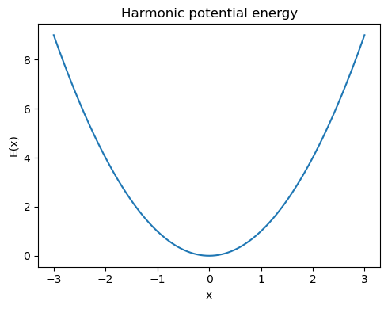
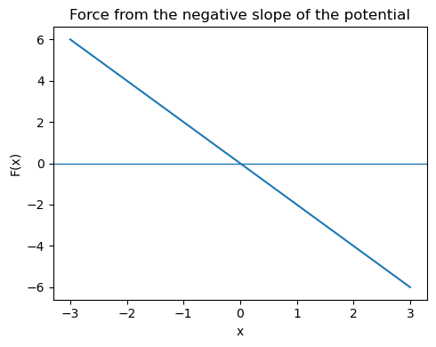
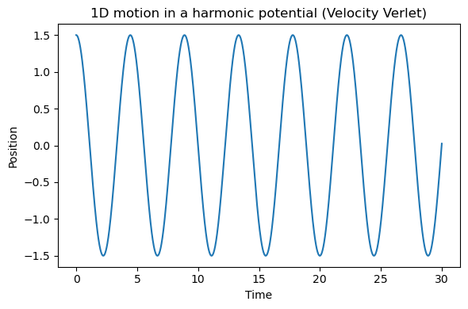
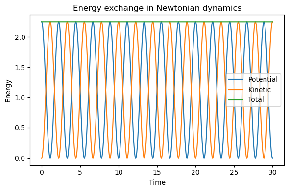
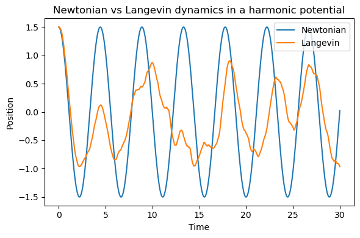

5.3.2. Molecular Mechanics / Molecular Dynamics#
5.3.2.1. Motivation: From Forces to Motion#
The emphasis is on the transition from potential energy functions to equations of motion and then to molecular dynamics trajectories.
5.3.2.2. Learning goals#
By the end of this lesson, you should be able to:
Explain how forces are obtained from a molecular mechanics potential energy function.
State Newton’s equations of motion and describe their role in MD.
Understand the basic idea of numerical integration in molecular dynamics.
Contrast Newtonian dynamics with Langevin dynamics.
Explain why solvation matters and distinguish between explicit and implicit solvent.
5.3.2.3. Big picture: from energy to motion#
In molecular mechanics, we define a potential energy function
where \(\mathbf{r}\) represents all atomic coordinates.
Once the energy is known, the force on atom \(i\) is
This is the key bridge from molecular mechanics to molecular dynamics:
MM: gives us the energy of a structure
MD: uses the forces from that energy to move the atoms in time
5.3.2.4. Typical molecular mechanics energy function#
A standard force field writes the total potential energy as a sum of bonded and nonbonded terms:
For example:
Each term contributes to the total force because the force is the negative derivative of the total energy.
5.3.2.5. A simple 1D potential: force as the slope of the energy#
To build intuition, let us start with a one-dimensional harmonic potential:
The corresponding force is
So the force always points back toward the minimum at \(x_0\).
Show code cell source
import numpy as np
import matplotlib.pyplot as plt
# Harmonic potential example
k = 2.0
x0 = 0.0
x = np.linspace(-3, 3, 400)
E = 0.5 * k * (x - x0)**2
F = -k * (x - x0)
plt.figure(figsize=(5,4))
plt.plot(x, E)
plt.xlabel("x")
plt.ylabel("E(x)")
plt.title("Harmonic potential energy")
plt.tight_layout()
plt.show()
plt.figure(figsize=(5,4))
plt.plot(x, F)
plt.axhline(0, linewidth=1)
plt.xlabel("x")
plt.ylabel("F(x)")
plt.title("Force from the negative slope of the potential")
plt.tight_layout()
plt.show()


5.3.2.6. Discussion questions#
Where is the force zero?
Where is the energy minimum?
Why does the sign of the force change as the particle crosses the minimum?
5.3.2.7. Newton’s equations of motion#
The foundation of classical molecular dynamics is Newton’s second law:
or equivalently,
This tells us that if we know:
the current positions
the current velocities
the forces on each atom
then we can update the system forward in time.
In principle, the trajectory is deterministic: if the initial conditions are exactly known, the future motion is determined.
5.3.2.8. Why numerical integration is needed#
For real molecular systems, there is no closed-form solution for the motion of thousands of interacting atoms.
Instead, MD uses a small time step and repeatedly updates positions and velocities.
A common algorithm is velocity Verlet.
5.3.2.8.1. Velocity Verlet equations#
Then forces are recomputed at the new positions, giving (\mathbf{a}(t+\Delta t)), and velocities are updated by
Typical MD time steps are around 1-2 fs for atomistic simulations.
Show code cell source
def velocity_verlet_1d(force_func, x0, v0, m, dt, nsteps):
xs = np.zeros(nsteps + 1)
vs = np.zeros(nsteps + 1)
ts = np.arange(nsteps + 1) * dt
xs[0] = x0
vs[0] = v0
a = force_func(x0) / m
for i in range(nsteps):
xs[i+1] = xs[i] + vs[i]*dt + 0.5*a*dt**2
a_new = force_func(xs[i+1]) / m
vs[i+1] = vs[i] + 0.5*(a + a_new)*dt
a = a_new
return ts, xs, vs
# Harmonic force F = -k(x-x0)
def harmonic_force(x, k=2.0, xeq=0.0):
return -k * (x - xeq)
m = 1.0
dt = 0.02
nsteps = 1500
teval, xpos, vpos = velocity_verlet_1d(harmonic_force, x0=1.5, v0=0.0, m=m, dt=dt, nsteps=nsteps)
plt.figure(figsize=(6,4))
plt.plot(teval, xpos)
plt.xlabel("Time")
plt.ylabel("Position")
plt.title("1D motion in a harmonic potential (Velocity Verlet)")
plt.tight_layout()
plt.show()

5.3.2.8.2. What do you observe?#
This motion is oscillatory because the harmonic potential is a restoring potential.
In an ideal Newtonian system with a stable integration time step, the particle repeatedly moves back and forth through the minimum.
Show code cell source
# Plot kinetic, potential, and total energy for the harmonic trajectory
k = 2.0
potential = 0.5 * k * xpos**2
kinetic = 0.5 * m * vpos**2
total = potential + kinetic
plt.figure(figsize=(6,4))
plt.plot(teval, potential, label="Potential")
plt.plot(teval, kinetic, label="Kinetic")
plt.plot(teval, total, label="Total")
plt.xlabel("Time")
plt.ylabel("Energy")
plt.title("Energy exchange in Newtonian dynamics")
plt.legend()
plt.tight_layout()
plt.show()

5.3.2.9. Interpreting Newtonian MD#
Pure Newtonian dynamics corresponds most closely to the microcanonical ensemble (NVE):
N = number of particles fixed
V = volume fixed
E = total energy fixed
In this picture, energy is not exchanged with an external heat bath.
This is conceptually clean and physically important, but it is not always the most convenient description of a biomolecule in solution at constant temperature.
5.3.2.10. Why Newtonian dynamics is often not enough#
Real molecular systems, especially biomolecules, are usually not isolated.
For example, a protein in water experiences:
continual collisions with solvent molecules
friction-like dissipation
random thermal kicks
exchange of energy with the environment
This motivates other equations of motion, especially Langevin dynamics.
5.3.2.11. Langevin dynamics#
A common form of the Langevin equation is
where
\(F(x)\) is the deterministic force from the potential energy function
\(-\gamma v\) is a friction term
\(R(t)\) is a random force representing thermal noise
5.3.2.11.1. Interpretation#
Langevin dynamics adds two effects that pure Newtonian dynamics does not include:
Damping from the environment
Random kicks from thermal motion of the surroundings
This makes Langevin dynamics especially useful for simulations meant to represent molecules in a solvent bath at roughly constant temperature.
Show code cell source
def langevin_dynamics_1d(force_func, x0, v0, m, gamma, kT, dt, nsteps, seed=0):
rng = np.random.default_rng(seed)
xs = np.zeros(nsteps + 1)
vs = np.zeros(nsteps + 1)
ts = np.arange(nsteps + 1) * dt
xs[0] = x0
vs[0] = v0
sigma = np.sqrt(2 * gamma * kT / m)
for i in range(nsteps):
F = force_func(xs[i])
noise = sigma * np.sqrt(dt) * rng.normal()
a_eff = (F / m) - gamma * vs[i]
vs[i+1] = vs[i] + a_eff * dt + noise
xs[i+1] = xs[i] + vs[i+1] * dt
return ts, xs, vs
teval_L, xpos_L, vpos_L = langevin_dynamics_1d(
harmonic_force, x0=1.5, v0=0.0, m=1.0, gamma=0.8, kT=0.5, dt=0.02, nsteps=1500, seed=1
)
plt.figure(figsize=(6,4))
plt.plot(teval, xpos, label="Newtonian")
plt.plot(teval_L, xpos_L, label="Langevin")
plt.xlabel("Time")
plt.ylabel("Position")
plt.title("Newtonian vs Langevin dynamics in a harmonic potential")
plt.legend()
plt.tight_layout()
plt.show()

5.3.2.11.2. Discussion#
Compared with Newtonian dynamics, the Langevin trajectory typically shows:
damping of coherent oscillations
noisy fluctuations
behavior more reminiscent of motion in a solvent environment
This is one reason Langevin dynamics is so common in biomolecular simulation.
5.3.2.12. Newtonian vs Langevin dynamics#
5.3.2.12.1. Newtonian dynamics#
Advantages
clean physical foundation
deterministic trajectory from initial conditions
natural connection to conservation of total energy
Limitations
no heat bath
no solvent friction unless solvent atoms are explicitly present
not the most convenient way to maintain temperature
5.3.2.12.2. Langevin dynamics#
Advantages
incorporates environmental damping and noise
useful for temperature control
often numerically stable and practical for biomolecular systems
Limitations
no longer purely deterministic
strong damping can distort dynamical timescales
A good classroom message is:
Newtonian dynamics is the fundamental starting point; Langevin dynamics is a practical extension that often better represents molecules in a thermal environment.
5.3.2.13. Connecting solvation and dynamics#
There is an important conceptual connection here:
With explicit solvent, the water molecules themselves generate collisions and friction-like effects.
With implicit solvent, those microscopic solvent collisions are absent, so Langevin dynamics is often used to mimic them.
This gives a very useful teaching narrative:
Pure Newtonian dynamics is the basic engine.
Solvent and thermostats help make the simulation look more like a real laboratory environment.